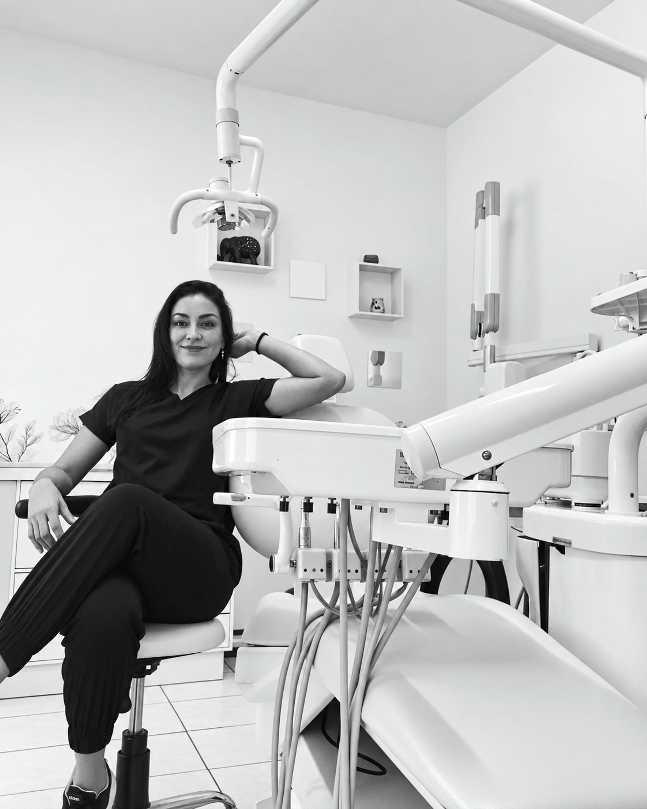
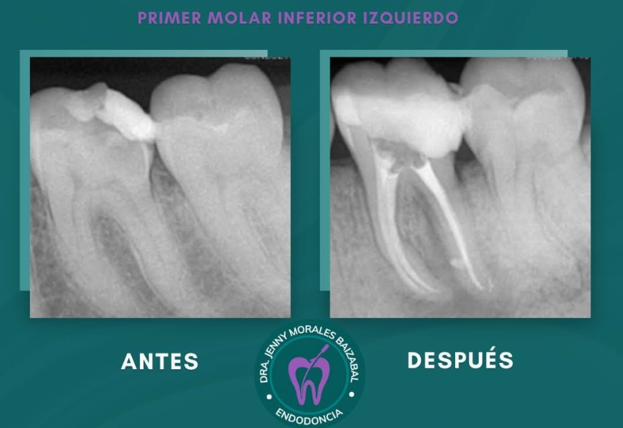
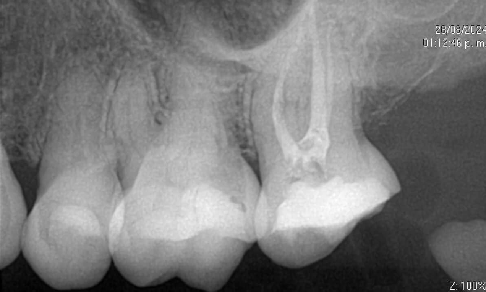
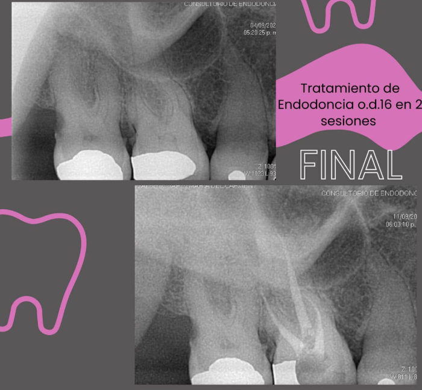

01
Comprender la molestia
Escuchar lo que sientes, revisar antecedentes relevantes y valorar el diente.
Antes de pensar en perder un diente, vale la pena conocer tus opciones. La Dra. Jenny Morales combina una atención cercana con una valoración profesional enfocada en conservar tu sonrisa siempre que sea posible.

El primer paso es conocer tu caso, resolver tus dudas y valorar las opciones disponibles para conservar tu diente. Esta página reúne información del consultorio, material clínico y acceso directo a la documentación profesional.
La endodoncia trata el interior del diente cuando la pulpa está afectada. Sólo una valoración profesional puede determinar qué tratamiento corresponde a tu caso.
Escuchar lo que sientes, revisar antecedentes relevantes y valorar el diente.
Explicar de forma clara el procedimiento indicado, sus tiempos y cuidados.
Resolver dudas antes de avanzar. Precios y complejidad dependen de la valoración.
El recepcionista digital hace el primer filtro, obtiene únicamente los datos necesarios y dirige cada caso según su prioridad.
Hola. Antes de pasarte con el consultorio, te ayudo a dirigir tu solicitud. ¿Eres paciente nuevo o ya te ha atendido la doctora?
Soy paciente nuevo y tengo dolor desde ayer.
Las radiografías forman parte de la evaluación clínica. Estas imágenes son material ilustrativo del consultorio y no garantizan resultados individuales.



Consulta directamente el documento profesional disponible en el sitio.
No. Puede explicar información general y organizar tu solicitud, pero la indicación de tratamiento requiere valoración profesional.
El costo depende del diagnóstico, el diente y la complejidad del caso. El consultorio puede orientarte después de la valoración correspondiente.
No. Puede identificar que ya tienes una cita o ayudarte a preparar una solicitud, pero la confirmación corresponde al consultorio.
El asistente puede detectar señales que ameritan atención prioritaria. Si existe dificultad para respirar o tragar, hinchazón progresiva de cara/cuello, sangrado incontrolable u otros síntomas graves, busca atención de urgencia de inmediato.
Cuéntanos brevemente qué necesitas. El asistente organiza tu solicitud y, cuando corresponde, habilita el contacto con el consultorio.
Ya tenemos el contexto mínimo de tu solicitud.
Continuar por WhatsApp ↗